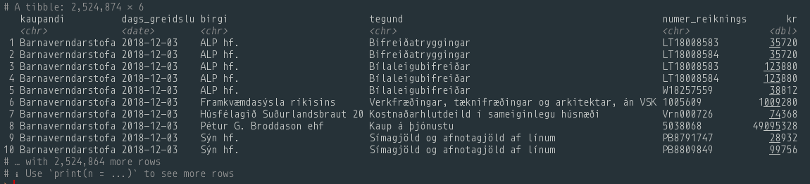
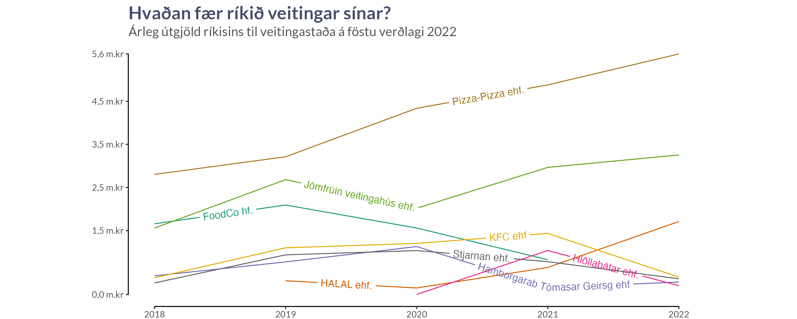
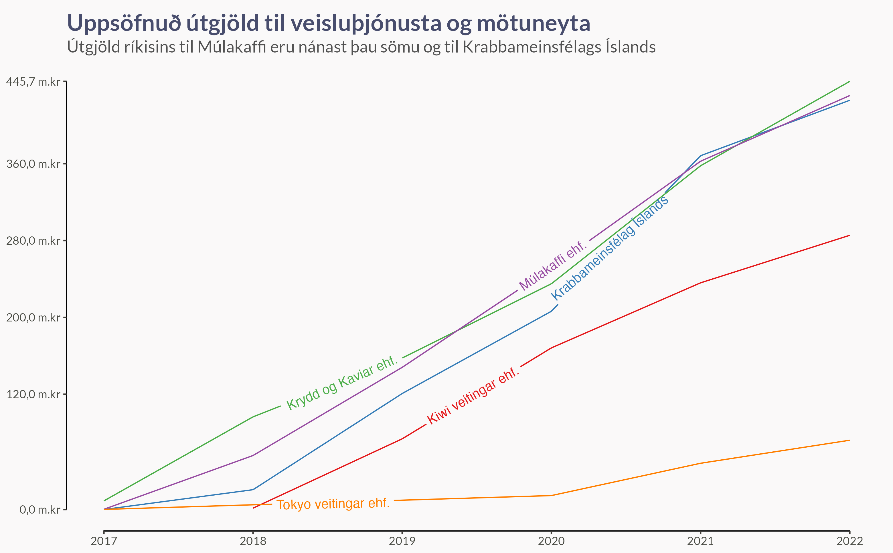

Á opnirreikningar.is stendur:
Opnirreikningar.is var opnaður í september 2017 með það að markmiði að auka gagnsæi og aðgengi almennings að fjárhagsupplýsingum ríkisins. Á vefnum er unnt að skoða upplýsingar um greidda reikninga ráðuneyta og stofnana úr bókhaldi ríkisins.
Birtar eru reikningsupplýsingar úr fjárhagskerfi ríkisins. Vefurinn er uppfærður mánaðarlega og nýjar upplýsingar birtast að jafnaði 10. hvers mánaðar. Þær upplýsingar sem birtar eru tengjast reikningum sem greiddir voru í mánuðinum á undan.
Á vefnum er hægt að leita eftir stofnun, birgja, tegund kostnaðar og tímasetningu.
Það er hægt að leita og fletta upp reikningum á þessari síðu, en ég tók mig bara til og skrifaði R kóða til að sækja gögnin, hreinsa þau aðeins og geyma í PostgreSQL gagnagrunni. Ef þið hafið áhuga á að læra meira um hvernig ég sæki og geymi opinber gögn mun ég reglulega birta greinar um það fyrir áskrifendur að Patreon síðu minni.

Veitingastaðir
Rekstraraðilar
Til að fletta upp veitingastöðum þurfum við að leita að fyrirtækjunum sem hjá um reksturinn, ekki veitingastöðunum sjálfum. Ég fékk frábærar hugmyndir frá ykkur á Twitter og framkvæmdi svo smá rannsóknarvinnu til að finna nöfnin á rekstraraðilunum.
| Fyrirtæki | Veitingastaðir |
|---|---|
| Pizza-Pizza ehf. | Domino's Piza |
| Jómfrúin veitingahús ehf | Jómfrúin |
| FoodCo hf. | Aktu taktu, Eldsmiðjan, Saffran, Pítan o.fl. |
| KFC ehf. | KFC |
| Stjarnan ehf. | Subway |
| HALAL ehf. | Mandi |
| Hlöllabátar ehf. | Hlöllabátar |
| Hamborgarab Tómasar Geirsg ehf | Hamborgarabúlla Tómasar |
Árleg útgjöld frá ríkinu
Það er skemmtilegt að sjá að tveir styrktaraðilar Pyngjunnar, Domino’s og Jómfrúin, eru vinsælustu veitingastaðirnir hjá ríkinu. Eins og vitur maður mælti við mig:
Þetta er hringrás. Þegar öllu er á botninn hvolft erum við sponsaðir af ríkinu.
Arnar Þór Ólafsson

Heildarútgjöld eftir stofnun
Ef við skoðum svo útgjöld hverrar ríkisstofnanar fyrir sig sjáum við mikinn smekksmun innámilli. Til dæmis vinnur greinilega einungis hugsjónafólk með gourmet smekk hjá Lögreglustjóranum á Suðurnesjum því sú stofnun kaupir bara KFC!
Barnaverndarstofa gengur sömuleiðis ótroðnar slóðir og borðar fjölbreytta blöndu af Mandi og Subway með smá Domino’s inná milli.
Ef þú ert frumkvöðull að hugsa um að opna hamborgarastað og þig vantar stóran reglulegan kúnna væri best að hafa samband við Umhverfisstofnun, Mennta- og menningamálaráðuneytið og Ríkisskattstjóra, og reyna að stela smá bissness frá Tomma. Ef þú kannt að djúpsteikta kjúkling fyrir burgerinn er Lögreglustjórinn á Suðurnesjum þinn mikilvægasti kúnni.

Veisluþjónustur og mötuneyti
Veitingastaðir blikna þó í samanburði við veisluþjónustur og mötuneyti. Til að setja þau útgjöld í smá samhengi voru útgjöld ríkisins til Múlakaffi ehf 431 m.kr á tímabilinu, samanborið við 426 m.kr til Krabbameinsfélags Íslands, og það er bara eitt fyrirtækið! Það er nóg til að kaupa 360.669,5 skammta af 15 kjötbollum úr Ikea, eða gefa þúsund manns einn skammt á dag í heilt ár.
